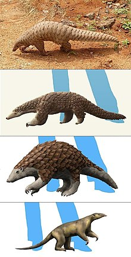

Pangolins, sometimes known as scaly anteaters, are mammals of the order Pholidota (from Ancient Greek φολῐ́ς, "horny scale"). The one extant family, Manidae, has three genera: Manis, Phataginus and Smutsia. Manis comprises the four species found in Asia, while Phataginus and Smutsia include two species each, all found in Sub-Saharan Africa. These species range in size from 30 to 100 cm (12 to 39 in). A number of extinct pangolin species are also known.
Pangolins have large, protective keratin scales covering their skin; they are the only known mammals with this feature. They live in hollow trees or burrows, depending on the species. Pangolins are nocturnal, and their diet consists of mainly ants and termites, which they capture using their long tongues. They tend to be solitary animals, meeting only to mate and produce a litter of one to three offspring, which they raise for about two years.
Pangolins are threatened by poaching (for their meat and scales, which are used in Chinese traditional medicine) and heavy deforestation of their natural habitats, and are the most trafficked mammals in the world.As of January 2020, of the eight species of pangolin, three (Manis culionensis, M. pentadactyla and M. javanica) are listed as critically endangered, three (Phataginus tricuspis, Manis crassicaudata and Smutsia gigantea) are listed as endangered and two (Phataginus tetradactyla and Smutsia temminckii) are listed as vulnerable on the Red List of Threatened Species of the International Union for Conservation of Nature.
about page the link text!!Pangolins, sometimes known as scaly anteaters, are mammals of the order Pholidota. The one extant family, the Manidae, has three genera: Manis, Phataginus, and Smutsia. Manis comprises four species found in Asia, while Phataginus and Smutsia include two species each, all found in sub-Saharan Africa Soures
A Philippine pangolin pup and its mother, a critically endangered species endemic to the Palawan island group. It is threatened by illegal poaching for the pangolin trade to China and Vietnam, where it is regarded as a luxury medicinal delicacy